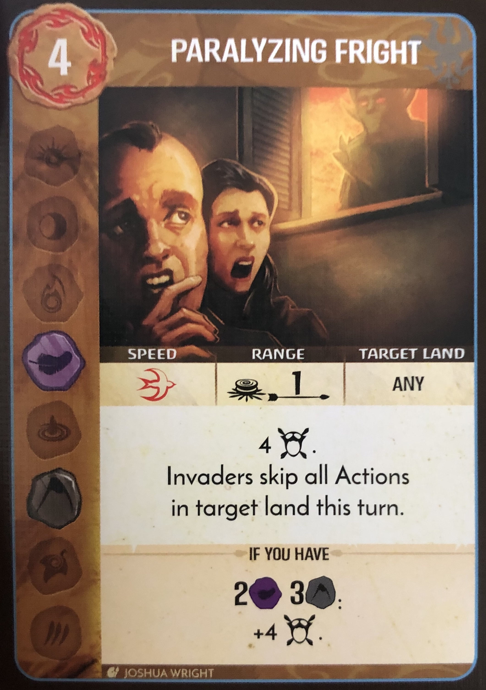
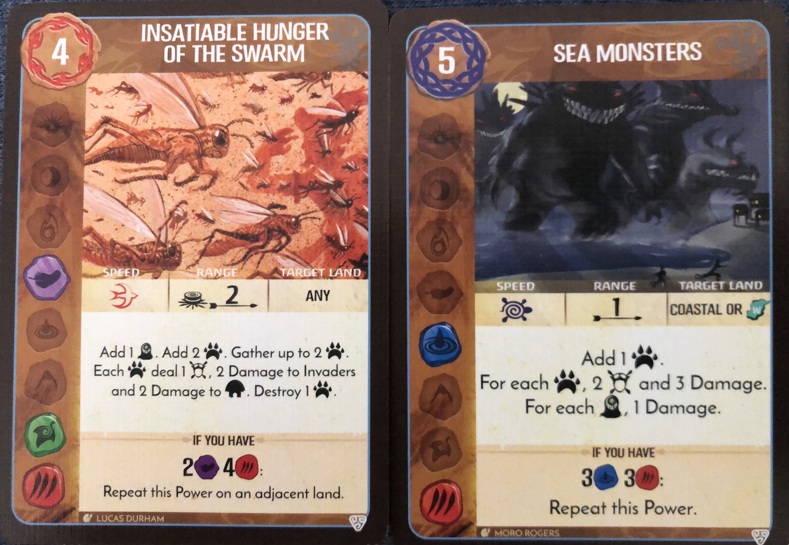

Game 1: using Flicker Flame (owen), Lightning (kaden), and earth defender (gabe) three of the four starting low difficulty characters. Easy game finishing around round 7 or 8 of 12. Very easy game done on difficulty 0 with no adversary.
Game 2: Using Memory (owen), volcano (parker), rock blight (kaden) and inland creature (gabe) beat another game with no adversary. Still a very easy game finishing around round 7. Easy game, little need for large colaboration efforts. Mostly stuck to dealing with our own space.
Game 3: using fire blight (ian), fire lizard (owen), mist (kaden), earth defender (gabe) low and path finder (parker), on a stage 4 difficulty against scottland. We had slow starting game, coast build up happened too fast and we weren't able to slow them down in time to do efficient damage in the later game. We lost around round 7 due to blight on the island.
Game 4: Played with the ocean and Bringer of nightmares. I alone played on a level 4 brandenburg Prussia adversary. felt a little overwhelmed in the mid game. I noticed I used bringer wrong a few times by destroying troops rather than generating fear. I almost lost to blight but had a close call finish by generating a ton of fear in the endgame. literally saved by the ocean generating massive anounts of fear using a card that was giving a fear card each turn.


Game 5: Played with Keeper (owen) and lightning (corinne). we played against lvl 2 England. Team combination felt very good. We focussed on removing invaders from the inlands and pushing them to the coast. We generated fear slow because there wasn't a lot to destroy early on, but we chose to let the coast build so we could come back with some strong powers. Keeper was very good at cornering the invaders and preventing their exploration. lightning was good as usual for destroying the buildings before growth and ravage phases. Lightning also made good use of powers to clear blight quickly before invaders could make a mess. Spirit combo was good, with lightning allowing keeper for some fast movements, and Keeper allowed lightning to gain power cards and energy frequently. We also played with the branch claw expansion only. We included the scenario card that has the extra markers on the board for uncovering for benefits. Only two cards were ever uncovered. First by the invaders who would explore and build when in wetlands and we uncovered ability #8 which happens once, instantly. Don't remember what is even did.
Game 6: Stone's unyielding defiance, keeper of the forbidden wilds. Played this game on my own against Habsburg Monarchy lvl 2. Game started slow. Spent most time trying to avoid letting the island blight. After enough build up, just started destroying everything. difficult game early on but finished very strong. Winning a victory on fear 2. Finished playing 6 cards a turn with keepar and just tormenting the invaders.
Game 7: Played alone with the flying beast card and the panther beast card against. lvl 4 sweeden. Took about 5 invader turns for me to loose. Both spirits seemed powerful but I don't think i used them nearly as effectively as I could. I don't like the flying spirits growth track. it feels like it makes things move too slowly. Both have powerful movement and fear creation but the fear cards collected were almost useless in this particular game. I would definitely say after playing that round that sharp fangs behind leaves was a more useful spirit overall. But if you are looking for a fast start many minds move as one would likely be better because all the 0 cost cards they start with.
scroll lock below:
Game 5: Played with Keeper (owen) and lightning (corinne). we played against lvl 2 England. Team combination felt very good. We focussed on removing invaders from the inlands and pushing them to the coast. We generated fear slow because there wasn't a lot to destroy early on, but we chose to let the coast build so we could come back with some strong powers. Keeper was very good at cornering the invaders and preventing their exploration. lightning was good as usual for destroying the buildings before growth and ravage phases. Lightning also made good use of powers to clear blight quickly before invaders could make a mess. Spirit combo was good, with lightning allowing keeper for some fast movements, and Keeper allowed lightning to gain power cards and energy frequently. We also played with the branch claw expansion only. We included the scenario card that has the extra markers on the board for uncovering for benefits. Only two cards were ever uncovered. First by the invaders who would explore and build when in wetlands and we uncovered ability #8 which happens once, instantly. Don't remember what is even did.
Game 5: Played with Keeper (owen) and lightning (corinne). we played against lvl 2 England. Team combination felt very good. We focussed on removing invaders from the inlands and pushing them to the coast. We generated fear slow because there wasn't a lot to destroy early on, but we chose to let the coast build so we could come back with some strong powers. Keeper was very good at cornering the invaders and preventing their exploration. lightning was good as usual for destroying the buildings before growth and ravage phases. Lightning also made good use of powers to clear blight quickly before invaders could make a mess. Spirit combo was good, with lightning allowing keeper for some fast movements, and Keeper allowed lightning to gain power cards and energy frequently. We also played with the branch claw expansion only. We included the scenario card that has the extra markers on the board for uncovering for benefits. Only two cards were ever uncovered. First by the invaders who would explore and build when in wetlands and we uncovered ability #8 which happens once, instantly. Don't remember what is even did.
Game 5: Played with Keeper (owen) and lightning (corinne). we played against lvl 2 England. Team combination felt very good. We focussed on removing invaders from the inlands and pushing them to the coast. We generated fear slow because there wasn't a lot to destroy early on, but we chose to let the coast build so we could come back with some strong powers. Keeper was very good at cornering the invaders and preventing their exploration. lightning was good as usual for destroying the buildings before growth and ravage phases. Lightning also made good use of powers to clear blight quickly before invaders could make a mess. Spirit combo was good, with lightning allowing keeper for some fast movements, and Keeper allowed lightning to gain power cards and energy frequently. We also played with the branch claw expansion only. We included the scenario card that has the extra markers on the board for uncovering for benefits. Only two cards were ever uncovered. First by the invaders who would explore and build when in wetlands and we uncovered ability #8 which happens once, instantly. Don't remember what is even did.
Game 5: Played with Keeper (owen) and lightning (corinne). we played against lvl 2 England. Team combination felt very good. We focussed on removing invaders from the inlands and pushing them to the coast. We generated fear slow because there wasn't a lot to destroy early on, but we chose to let the coast build so we could come back with some strong powers. Keeper was very good at cornering the invaders and preventing their exploration. lightning was good as usual for destroying the buildings before growth and ravage phases. Lightning also made good use of powers to clear blight quickly before invaders could make a mess. Spirit combo was good, with lightning allowing keeper for some fast movements, and Keeper allowed lightning to gain power cards and energy frequently. We also played with the branch claw expansion only. We included the scenario card that has the extra markers on the board for uncovering for benefits. Only two cards were ever uncovered. First by the invaders who would explore and build when in wetlands and we uncovered ability #8 which happens once, instantly. Don't remember what is even did.